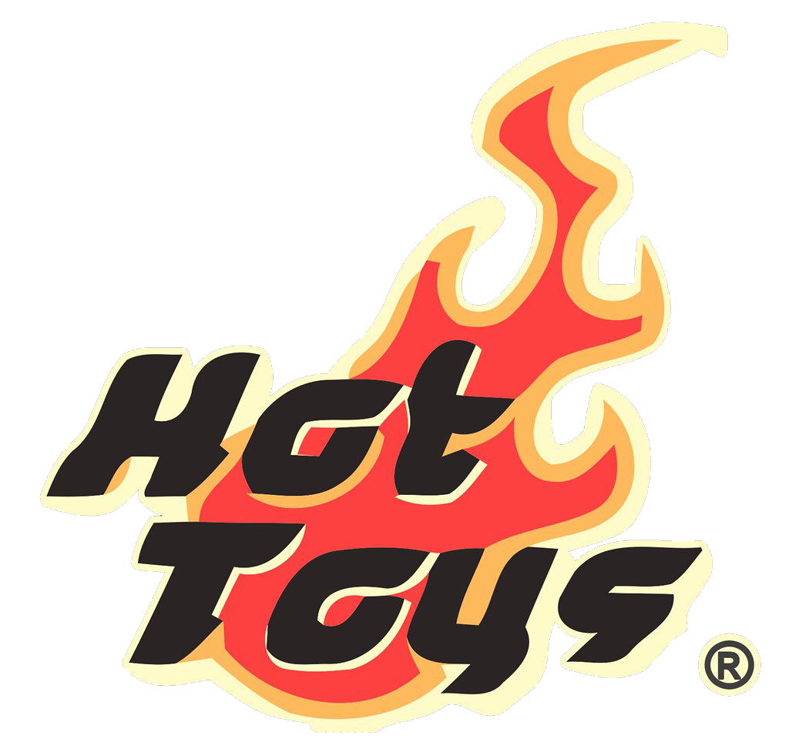

Established in 2000, Hot Toys Limited is a high-end collectible brand,
devoted to designing, developing and producing high quality and highly
detailed collectibles with authentic likeness. Initially started the
business from producing 1/6th scale military action figures, Hot Toys has
since expanded its product scope to specialize in 1/6th scale collectible
figures from popular movies, video games, comics as well as world renowned
celebrities.
Our mission
Hot Toys is the leader in the 1/6th collectible industry and has led the
quality of collectible figures development to another climax over the
past years. Moreover, Hot Toys has obtained the patent for its
innovation of Parallel Eyeball Rolling System (PERS) and Interchangeable
Faces Techniques (IFT) for its DX series, which has further increased
the likeness of the collectible figures.
In addition to 1/6th scale collectible figures, Hot Toys also focuses on
product diversity by introducing highly detailed 1/4th scale collectible
figures, 1/6th scale collectible vehicles. 1/4th scale collectible
busts, as well as 3” and 6” Cosbaby series.
Adding to the popular Movie Masterpiece Series (MMS) and Deluxe Series
(DX), Hot Toys has expanded its collection series in recent years to
include the 1/6th scale MMS Diecast Series, Power Pose (PPS), and
Diorama Series.
The Hot Toys brand is widely acclaimed in different parts of the world
with products sold by our strategic worldwide distributors to over 30
countries including the United States, Europe, Greater China, South East
Asia, Japan, Korea and the Middle East.
Achivements

Since 2003, Hot Toys has acquired the official merchandising rights in
producing collectibles from international movies which includes Iron Man,
The Avengers, Pirates of the Caribbean, Batman, The Dark Knight, Superman,
Terminator Series, Aliens & Predator franchises as well as world famous
celebrities such as King of Pop Michael Jackson, martial artist Bruce Lee,
two-time Oscar winner for Best Actor Award Marlon Brando, American film
icon James Dean, renowned movie actor and musician Leslie Cheung and Wong
Ka Kui, the founding member of the Hong Kong rock band – Beyond. Hot Toys’
collectibles have been sought after by movie, figure, and pop culture fans
and also appreciated by celebrities including Sylvester Stallone, Tom
Hiddleston, Jeremy Renner, Clark Gregg, Byung-hun Lee, Naoto Takenaka,
Mari Yaguchi and more.
Our Values
Quality
The Hot Toys quality is defined by movie-accuracy, authentic and
detailed fully realized likeness, craftsmanship, high quality and
details of the collectible figures. We focus on the collectibles as a
whole, not only on the head sculpt, but also on the costume, weapons
and accessories. Each piece of head sculpt of the final product is
specially hand-painted.
Talents
We have a talented team of Korean artists, specializing in head
sculpting, painting and art direction. Our key members of the Korean
team are JC. Hong, Yulli and Kojun. We also have specialized team for
making costume, weapons and accessories in Korea. Our Production,
Design, Marketing and Logistics teams are located in the headquarters
in Hong Kong.